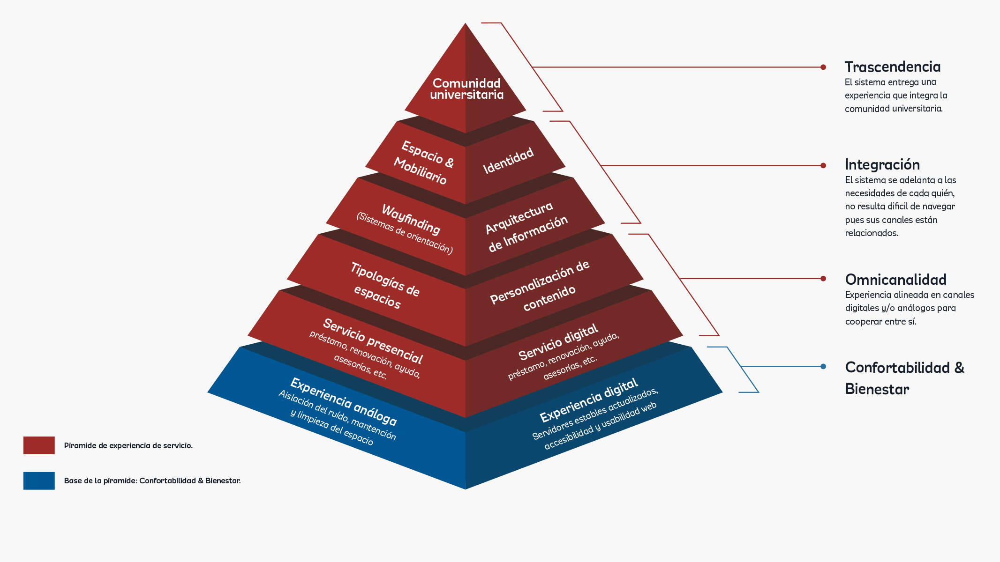
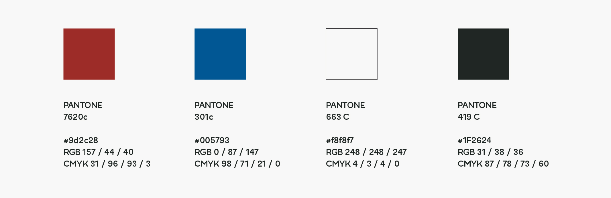
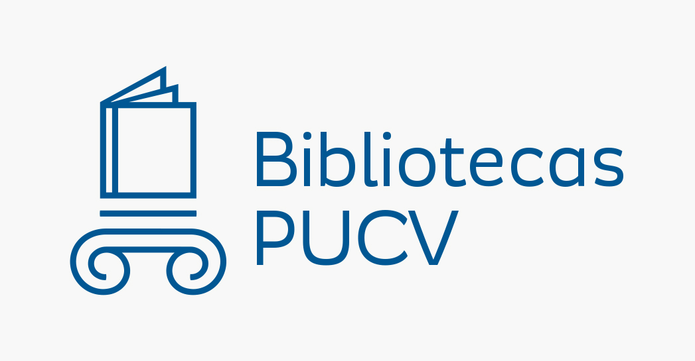
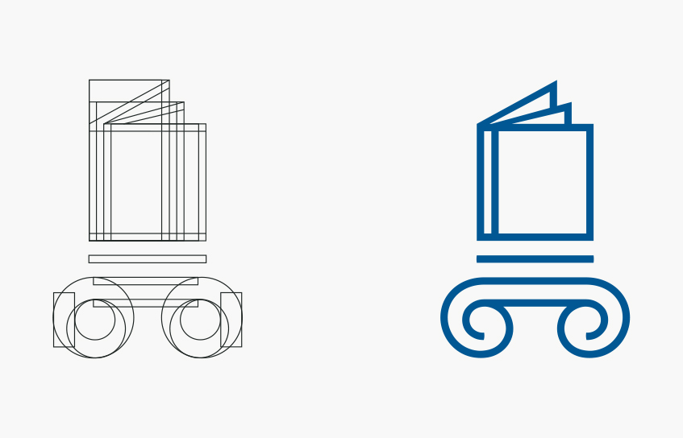
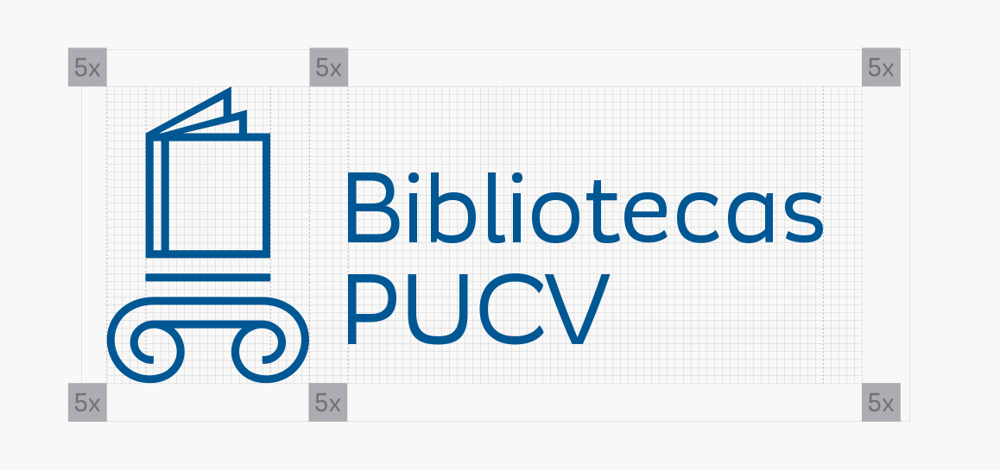

La siguiente página es un documento generado especialmente para el personal de Bibliotecas de la Pontificia Universidad Católica de Valparaíso. El presente Manual corresponde a la descripción exhaustiva de la nueva identidad de Bibliotecas PUCV. Este trabajo fue realizado en conjunto con bibliotecarios y diseñadores de nuestra Universidad, iniciado a principios del año 2020 y finalizado a mediados del presente año.
El material descrito y entregado al personal de Bibliotecas es de su uso exclusivo para preservar la identidad de esta nueva propuesta, ofreciéndose material explicativo y de utilidad para poder comunicar distintos tipos de información de acorde a una sola identidad
A continuación se presenta una indización del material que dimensiona a grandes rasgos trabajados para de Bibliotecas PUCV.
Índice de contenidos:
Bibliotecas PUCV busca propiciar una nueva forma de aprendizaje para nuestros estudiantes, así como también un mejor entorno de trabajo para nuestros funcionarios y auxiliares. Esta nueva forma de trabajo propicia el trabajo de aula invertida, fomentando los espacios colaborativos, dando así un recambio moderno y acorde a las necesidades de los estudiantes en nuestro sistema.
Ante esto nuestro modelo de trabajo busca renovarse mediante un mobiliario más dúctil y modular, además de integrar nuestros canales informativos bajo un solo lenguaje para poder dar con una sola identidad, incluyendo nuestras plataformas digitales.
Las Bibliotecas son un punto de encuentro en donde se desarrolla el estudio y la adquisición del conocimiento de una forma dinámica. Esto en conjunto con la valoración del servicio humanitario que Bibliotecas PUCV ofrece, humanizamos aún más nuestros servicios para hacer sentir a nuestros usuarios que podemos ayudarles de distintas maneras en pro de su formación profesional.
El presente modelo representa cómo nuestro servicio de Bibliotecas se canaliza y hace presente en nuestra comunidad universitaria. Apuntamos a fidelizar nuestro servicio hacia tres aspectos primordiales: omnicanalidad, integración y trascendencia.
Nuestro servicio es un sistema holístico, útil y sensible que se adapta constantemente a las necesidades de los usuarios de forma eficaz y a favor de nuevas formas de aprendizaje.
Con esta visualización comprendemos que nuestras bibliotecas deben ser navegables, usables, transformables, y cohesivas para que trasciendan en la vida de nuestros estudiantes, influyendo en el valor simbólico del servicio y sobre todo trascendiendo en la vida de los estudiantes.
Bibliotecas PUCV busca propiciar espacios que fomenten el aprendizaje basado en problemas y el trabajo de aula invertida, es decir que los estudiantes gestionen su propio aprendizaje mediante interacción con espacios y herramientas tecnológicas que permitan distribución de material tanto análogo como digital.
Los estudiantes toman roles activos dentro de las Bibliotecas, manteniendo una comunicación fluida en su entorno para su aprendizaje y estudio. La tecnología y la definición de los espacios en el nuevo modelo de Bibliotecas PUCV son elementos claves para potenciar la nueva visión de nuestro servicio: promover el aprendizaje colaborativo.
Nuestro Sistema de Bibliotecas apunta hacia cuatro principios. Estos fundamentan el sistema de trabajo, implementación y el uso del sistema: integración, apertura, funcionalidad y versatilidad.
Diferentes Bibliotecas, una sola identidad
El principio de integración busca una homologación de los distintos puntos de contacto mediante la identidad visual. Esto ocurre a través de el isologo, sitio web, señaléticas, infografías, boletines, mobiliario, etc. Así, los diversos puntos de contacto conversan entre sí para generar un servicio omnicanal e íntegro.
Bibliotecas PUCV más allá de sus muros
La visibilidad y la transparencia en la infraestructura es fundamental para que ocurran las actividades de aprendizaje a un ritmo dinámico y activo. Nuestros espacios interiores se abren hacia muros y límites bajos, separadores no obstrusivos, libreros bajos etc., aumentando así la visibilidad y luz al interior de los espacios.
Buscamos nuevos espacios para el aprendizaje fuera de los muros de las bibliotecas, zonas exteriores que se identifiquen como parte del Sistema a través de la implementación de bancas o mesas de exterior pertenecientes al sistema.
Potencionando una comunicación oportuna
La comunicación oportuna en nuestros canales online y offline resulta esencial. Este principio dirige a los usuarios mediante las posibilidades de la señalización, infografías u otras herramientas.
Enfocados en usabilidad y accesibilidad a nuestras Bibliotecas
Queremos proveer al Sistema de Bibliotecas con un principio enfocado en la usabilidad y la accesibilidad, tanto a los espacios como a la información, esto a través de la ergonomía del mobiliario, la distribución accesible, estándares de usabilidad y accesibilidad web.
Esto ocurre mediante elementos tangibles tales como señaléticas con Lectoescritura Braille alrededor de nuestras Bibliotecas, además de elementos ajustados a normas de accesibilidad web tales como tipografía, color, etc.
Espacios móviles y modulares
El diseño de los objetos e interfaces de forma modular nos permite ir adaptando los espacio con facilidad a medida que cada una de las Bibliotecas lo va requiriendo. Adaptar los espacios con facilidad es un principio fundamental para replicar rápidamente el sistema a otras facultades.
Bibliotecas PUCV presenta una renovación holística en cuanto aspectos de identidad visual, es decir: paleta cromática; tipografía; isologo. ¿Por qué enfocarnos en un lenguaje visual e identitario? pues el lenguaje visual contribuye directamente a la construcción de la identidad y la comunidad universitaria. Con esto el valor simbólico de la Biblioteca contribuye a un cambio cultural en la comunidad.
Nuestra paleta cromática surge a partir de los colores de la Pontificia Universidad Católica de Valparaíso, es así como se preserva un sentido de pertenencia.
Ante esto el color que lleva a la palestra de Bibliotecas PUCV es el Color Rojo (Pantone 7620 c) haciéndose cargo de dar la distinción a los canales por los cuales se transmite el Sistema, tales cómo: sitio web; señalización; boletines informativos; mobiliario y espacio.
Como colores complementarios se encuentra el Color Azul (Pantone 301 c); Blanco (Pantone 663 c) y Negro (Pantone 419 c). Es así que a partir de esta composición se lleva a cabo una paleta cromática representativa de Bibliotecas PUCV.
Para preservar términos de legibilidad y contraste los colores han sido calibrados de forma accesible para personas con algún tipo de capacidad visual reducida. Esta calibración fue realizada bajo parámetros de la W3C (World Wide Web Consortium), entidad que establece normas básicas de accesibilidad y legibilidad web.
Es importante no modificar esta paleta cromática, pues esto genera de inmediato una pérdida de valor. Además, se recomienda evitar ciertas nomenclaturas entre los colores, puesto que así se pierden valores de visibilidad e identidad.
La tipografía de Bibliotecas PUCV proviene directamente de Normas Gráficas de la PUCV.
"Modernica", es una tipografía desarrollada por Javier Quintana y distribuida por Quintana Font. La elección de la tipografía responde a su valor visual, puesto que permite ser aplicada en diferentes estilos y formatos tales como sitio web, señaléticas, informes, u otros que permiten una fácil lectura y legibilidad.
En la mayoría de los canales o puntos de contacto de Bibliotecas PUCV, las variantes más usadas de esta tipografía son:bold, regular, heavy.
El Isologo para Bibliotecas PUCV proviene del concepto del Isologo de la PUCV. Nos apropiamos del concepto de la cariátide y del libro, haciendo alusión a la fortaleza por el estudio, como un elemento de cohesión y sustento entre comunidad e institución (ariatide) y por otro lado hacer alusión a la lectura y el depósito del conocimiento en las páginas (libro).
El isologo en su completitud contiene varios ajustes ópticos, terminaciones y márgenes. Esto permite que pueda adaptarse fácilmente a distintas escalas y soportes, así como por ejemplo: papelería, señalética, infografías, etc. Es por esto que cualquier ajuste de trazos o formas, no puede ser realizada de manera azarosa.
El área de protección destinada para el isotipo (dibujo por sí solo) se genera bajo la medida de un trazo principal, esta medida (x) se replica a través de toda una grilla, dando así con una construcción equivalente.

En este aspecto el isologo (conjunto entre dibujo y texto) juega con esta misma congruencia gráfica (x), es a partir de aquello que se empiezan a levantar grillas que definen su área de protección (5x), es decir, área por la cual no debe intervenir otro elemento ajeno al dibujo. Esta regla (5x) aplica para cualquier elemento que se acerca al isologo, incluyendo textos u otros logotipos.
El orden correcto siempre será situar el logo de la PUCV antes que el isologo de Bibliotecas PUCV (de izquierda a derecha). Ambos isologos mantienen un horizonte visual trabajados cuidadosamente, por lo cual es primordial mantener un horizonte de lectura a partir de los textos y dibujos de ambos logotipos.
Las decisiones gráficas demuestran una eficacia respecto al color con otros elementos gráficos (en específico con la tipografía). Esta facilidad en la legibilidad dadas por la armonía del isologo, la tipografía y el color producen un sentido significativo para el usuario. Es por esto que existen contrastes admitidos y no admitidos para la aplicación del isologo en sus distintos formatos.
Uno de los canales informativos más potentes y activos para Bibliotecas PUCV son los “boletines informativos”. Su cuidado no es menor, es un formato digital en donde la imagen de marca también se hace visible a través de la entrega de información importante y útil para los estudiantes.
Se configura un sistema y un lenguaje visual propio y acorde a las normas gráficas preestablecidas. ¿Cómo nos presentamos ante los estudiantes?¿Cómo humanizamos nuestro sistema?
Nuestro sistema valora la importancia comunicativa de este canal informativo para resolver problemas que pueden tener los usuarios en cuanto a orientación y acceso a la información. La señalización se convierte así en una herramienta informativa que protege el entorno y la identidad de Bibliotecas PUCV.
Ante esto, la señalización para Bibliotecas PUCV busca la congruencia y homologación entre materialidad, color y tipografía, además de facilitar la movilización autónoma, el ahorro del tiempo para el personal bibliotecario y una modularización que permite su recambio a medida que sea necesario.
Como parte de un Sistema de Señalización consistente, existen factores primordiales que preservan el lenguaje de un sistema de Señalización. Ante esto Bibliotecas PUCV tiene elementos tales como: tipografía; paleta de colores y materialidad.
Es clave mantener un orden y constancia en la materialización de cada una de las señaléticas planteadas para Bibliotecas PUCV, por lo cual, se describe cada una de ellas de manera tal que se conserve estos elementos.
Es fundamental hacer uso de Señalización que pueda indicar elementos de emergencia o vías de evacuación. La materialidad destinada para esta señalización es de aluminio compuesto de color blanco, además de vinilo adhesivo rojo y azul según corresponda, esto para identificar de forma fácil y eficiente elementos de emergencia y vías de salida ante casos de emergencia.
Esta señalización posee un formato que le permite ser modular, es decir que puede ser renovada o reubicada. Sin embargo la información transmitida no puede ser modificada, puesto que debe estar relacionada a normas del IST (Instituto de Seguridad del Trabajo).
La señalización en lectoescritura Braille, abre camino hacia el acceso a la información y los espacios. Ante esto, como parte de la propuesta del Sistema de Señalización se contempla lectoescritura Braille para puntos estratégicos y direccionales de las Bibliotecas, esto con el fin de ir desarrollando un lenguaje que apoye el acceso a las Bibliotecas a personas con una capacidad visual reducida.
En esta sección se describen las recomendaciones básicas y obligatorias para una buena rotulación de Señalética en Lectoescritura Braille dentro de Bibliotecas PUCV. Dichas recomendaciones han sido realizadas bajo el estudio y las normativas de la Comisión Braille Española (CBE), entidad a cargo de estandarizar el lenguaje y la escritura del sistema braille en rotulaciones.
La señalización de las estanterías contempla dos propósitos: elaboración autónoma y modular. Esta señalética se compone por dos elementos: plástico acrílico (sujeto directamente a los estantes) y una papeleta informativa. Estos dos elementos en conjunto hacen de esta señalización un elemento modular que permite ser modificado constantemente según lo necesite la Biblioteca. La información de esta papeleta está dada por el Sistema de Clasificación Decimal de Dewey, manteniendo cierto Lenguaje de forma homologada y eficaz.
Para esto visitar la plataforma digital para la descarga de este material aquí.
La señalización espacial nos indica cuáles espacios y/o salas pertenecen o no al Sistema de Bibliotecas PUCV, por ello es que se han denominado estos espacios mediante sus nombres y requerimientos. Además de la aplicación del color de esta submarca. Así se identifican qué espacios pertenecen a la Biblioteca. Esto comunicado a través del pintado de paredes o del etiquetado del espacio mediante adhesivos con el nombre del espacio.
Este tipo de señalización si bien no requiere de un soporte en específico, si requiere de ser aplicada en puntos específicos que demarcan los límites del espacio para que estos puedan ser utilizados de forma correcta.
El Lenguaje infográfico de Bibliotecas PUCV es primordialmente la elaboración de infografías que indiquen los espacios principales de la Biblioteca, su mobiliario, y las condiciones de uso. Este Lenguaje se compone a través de dibujos realistas e isométricos del espacio y un relato, el cual acompaña estos dibujos de forma explicativa.
Este Lenguaje es bastante explicativo y descriptivo con el motivo de que los estudiantes sean capaces de recibir la información y aplicar los códigos de conducta sin tener la necesidad de acudir a un bibliotecario a no ser que sea estrictamente necesario.
El sitio web se trata de un canal informativo crucial para Bibliotecas PUCV, conformándose como una bajada clave del sistema. Nuestro sitio web contempla tres principios en los cuales se configura su disposición y apariencia.
Nuestro sitio web reordena su contenido a disposición de los estudiantes con un enfoque claro en entregar herramientas de fácil acceso. Contempla además que las iniciativas del sitio se ajusten a la propuesta de acuerdo a las normas gráficas preestablecidas, apoyando así la coherencia visual y el acceso a la información.
Nuestro sitio web propone un reordenamiento del contenido de acuerdo a jerarquías necesarias; un cambio en ciertas rotulaciones (juzgadas como confusas) y una presentación del contenido de fácil y rápido acceso, además contempla nuevas interacciones que permiten eficacia y sincronía en el servicio (omnicanalidad).
Un entorno bibliotecario debe ser amable y eficaz. Un entorno descuidado influye directamente en la calidad de la experiencia. Dicha relación se hace tangible en los puntos de contacto de nuestras Bibliotecas; objetos; arquitectura; mobiliario; climatización, etc.
Climatizar los entornos de nuestras bibliotecas hacia un ambiente más agradable, iluminado, pulcro y moderno, potencian el hecho de que nuestro servicio sea útil bajo condiciones de confort, seguridad e igualdad para todas las personas. Hemos modernizado nuestro sistema de climatización, aire acondicionado, aislamiento de ruido, muebles, mesas de trabajo, sillas, poltronas, estanterías, etc.
Los espacios de trabajo en Bibliotecas PUCV han sido diseñados para dar movilidad y libertad a los estudiantes de la Universidad, junto a los principios de Diseño se han definido espacios basados en la metodología de Diseño atómico. Dicho esto se han configurado nuevos “espacios” que logran demarcar y construir nuevas conductas y formas de estudio.
La metodología del Diseño atómico apunta hacia el desarrollo lógico de los espacios dentro de un sistema complejo a través de elementos modulares que pueden ser agrupados de tal manera que configuren un ecosistema.
Traducido esto a nuestros espacios en Bibliotecas PUCV, estos se configuran mediante átomos de trabajo, moléculas de trabajo y organismos complejos, que en su conjunto configuran el sentido holístico de nuestro sistema.
Átomos de trabajo: Son las unidades mínimas que configuran el espacio, tales como poltronas, mesas de trabajo grupal o individuales, sillas, pizarras y estanterías. Por otro lado, se consideran como átomos de diseño algunos elementos gráficos tales como: tipografía, color, señalética, isologo.
Moléculas de trabajo: Conforman un pequeño ecosistema en torno al acto. Es el esqueleto principal que caracteriza los espacios (o salas). Ejemplos de moléculas de trabajo son: diálogo, multimedia, estudio grupal, estudio individual, estudio de pares.
Organismos complejos Son conjuntos de una o más tipos de moléculas que comunican el tipo de comportamiento a través de la señalización y el mobiliario. Estos “espacios” son los que en su conjunto comprenden la complejidad del sistema. Ejemplos de espacios en Bibliotecas PUCV son: Espacio Redes, Espacio Nodos, Espacio Cubículos, Espacio Lúdico.
Espacio Redes funciona como un entorno diseñado para potenciar el trabajo colaborativo y autónomo mediante el uso de tecnología y mobiliario moderno y dúctil. De esta forma se propicia el aprendizaje basado en proyectos, problemas y el trabajo de aula invertida.
Este espacio se caracteriza principalmente por poseer un mobiliario modular, es decir que puede ir adaptándose a las necesidades de los estudiantes además de complementarse con tecnología de Pantallas LED, esto con el fin de mostrar material audiovisual mediante conexión Wifi u otro medio directo (HDMI por ejemplo).
Espacio Redes se puede identificar además por poseer ciertas moléculas de trabajo, tales como: Diálogo y Multimedia.
Área de trabajo está destinada y pensada para el trabajo individual o de pares, permitiendo a los estudiantes mantener privacidad además de cierta normativa y respeto por el estudio del otro.
Si bien es un área de silencio y estudio, es un espacio de uso abierto en donde se pueden utilizar sillas y mesas, además de mesas perimetrales y seccionadas que permiten el trabajo individual. Deben respetarse las normas básicas de una Biblioteca, siendo el silencio y el respeto por el resto lo primordial.
Este espacio se puede identificar mediante moléculas de trabajo tales como: estudio individual o de pares.
El Espacio Cubículos se comprende como un área de trabajo grupal cerrada que permite el trabajo colaborativo y el debate. Esto acompañado de pizarras o pantallas LED. Ante las nuevas normativas condicionadas por la Pandemia de COVID-19, los cubículos permiten un aforo máximo de 4-6 personas y deben ser solicitados con antelación en el sitio web de Bibliotecas PUCV.
Este espacio se identifica por su estructura individualizada, además del complemento del mobiliario mencionado previamente.
Esta área abre cabida al juego, la recreación y el ocio en medida que se respete el espacio y estudio del resto.
Los estudiantes pueden hacer uso de los estantes de juego así como también de las mesas lúdicas y mesas individuales, sillas y sillones que se ofrecen.
Este espacio se identifica a través de moléculas de recreación tales como: mesas lúdicas y espacio abierto
Como se mencionó previamente, se han configurado moléculas de trabajo para ser replicadas fácilmente dentro del sistema. Esto facilita su comunicación, identificación y uso, tanto por parte de los estudiantes como por parte de los funcionarios de nuestro sistema.
Zona diseñada especialmente para fomentar el trabajo colaborativo y multimedia a través de la conformación de grupos de trabajo. Los códigos de conducta en esta molécula de trabajo permiten el debate libre y espontáneo entre los estudiantes que conforman estos grupos (de hasta 8 personas).
El mobiliario que compone esta molécula está formado por: sillas de trabajo, mesa de trabajo y pantalla LED. Los estudiantes pueden hacer uso de estas herramientas de forma libre siempre y cuando mantengan el orden y cuidado del entorno.
Diálogo es un espacio diferente de trabajo más versátil, se puede dar el estudio individual y privado además del debate y la colaboración con otros pares. Este espacio de trabajo permite que los estudiantes puedan beber un té o un café siempre y cuando se mantenga limpio y ordenado.
Este espacio a diferencia de Multimedia provee una pizarra móvil que los estudiantes pueden utilizar para su estudio, además de sillones de descanso donde pueden sentarse cómodamente
Las moléculas de estudio individual se presentan de tal forma que permite a los estudiantes ocupar el espacio de forma individual, buscan fomentar la concentración y el silencio. Este tipo de molécula está compuesta por diversos mobiliarios pero que cumplen la misma función, por ejemplo: mesas seccionadas de trabajo con separadores de vidrio, mesas perimetrales y mesas redondas de trabajo en duplas.
Estas “moléculas de trabajo” son un espacio abierto de libre uso para los estudiantes, pero que mantienen un código más normado dentro de las Bibliotecas: silencio y respeto por el resto.
Las moléculas de estudio grupal están enfocadas principalmente en Espacio Cubículos o Nodos y se comportan como islas de trabajo que permiten la colaboración de pares o en grupos de hasta 4 personas.
Se ubican principalmente en Espacio Cubículos, pues es un espacio de estudio cerrado que permite un aforo de 4-6 estudiantes. Se permite también el debate y la colaboración y se identifica principalmente por ser una molécula de trabajo con mesa de trabajo grupal, 4-6 sillas, pantalla LED y pizarra móvil.
A diferencia del Estudio grupal cerrado, el Estudio grupal (de pares) permite el trabajo colaborativo de hasta 2 personas máximo, esto en mesas más pequeñas, es de uso abierto y libre, es decir puede ser utilizada tanto para estudio como para el ocio, descanso o recreación de los estudiantes.